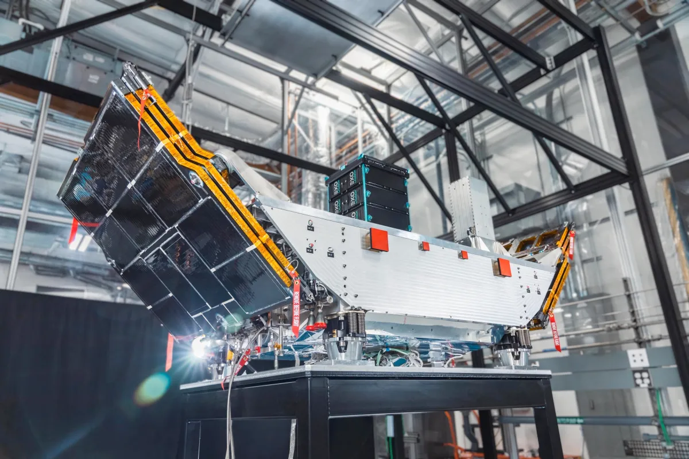

Zenno Astronautics
Radiation shielding and testing for an in-orbit superconducting satellite module.


Designed and implemented a radiation shielding solution for the Z01 Supertorquer and developed a comprehensive radiation testing programme to validate its performance in the space environment.
The Z01 Supertorquer - a superconducting satellite module, shown above and circled in red, was afterwards successfully launched aboard Impulse Space's LEO Express-3 and is now fully operational in orbit.
Performed radiation dose analysis using SPENVIS to estimate the orbital environment and inform the shielding design. Planned and executed radiation testing to characterise the electronics' response and determine possible mitigations for radiation-induced effects.
The shielding design balanced radiation protection with spacecraft engineering constraints, including mass budget, outgassing requirements, thermal effects, and surface bonding considerations.